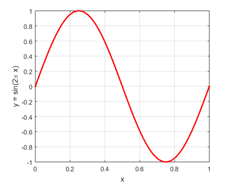
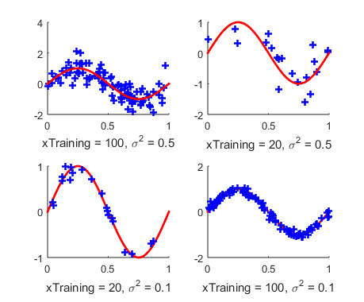
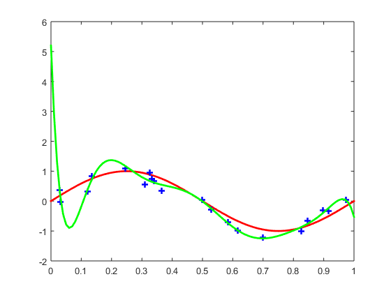
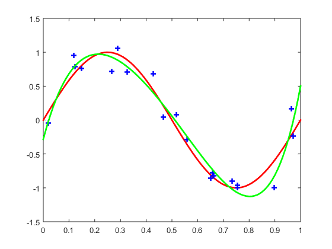

曲线拟合之matlab实现
目录
1 回忆
在
中我们介绍了多项式曲线拟合问题并从多方面对其进行了分析，顺便引入了机器学习领域的一些关键术语。今天我们针对多项式曲线拟合问题做一些matlab试验。
1.1 数学模型
目标模型：
\begin{equation} \label{eq:2} y(x, \mathbf{w}) = w_{0} + w_{1}x + \ldots + w_{M}x^{M} = \sum_{j=0}^{M}w_{j}x^{j} \end{equation}均方误差函数：
\begin{equation} \label{eq:3} E( \mathbf{w}) = \frac{1}{2} \sum_{n=1}^{N}\{y(x_{n}, \mathbf{w}) - t_{n}\}^{2} \end{equation}针对目标模型和均方误差函数的解\(\mathbf{w} = \{w_{j}\} \)是一般线性方程：
\begin{equation} \label{eq:4} \sum_{j=0}^{M}A_{ij}w_{j} = T_{i}, i = 0,\ldots ,M \end{equation}的解。其中\(A_{ij} = \sum_{n=1}^{N}(x_{n})^{i+j}\)，\(T_{i} = \sum_{n=1}^{N}(x_{n})^{i}t_{n}\) 关于这个结论的证明过程详见 曲线拟合过程中的欠定过定问题 。
式 (\ref{eq:4}) 可以写成矩阵的形式，如下：
\begin{equation} \label{eq:1} \begin{bmatrix} A_{00} & \ldots & A_{0M}\\ \vdots & \ddots & \vdots \\ A_{M0} & \ldots & A_{MM} \end{bmatrix} \begin{bmatrix} w_{0} \\ \vdots \\ w_{M} \end{bmatrix} = \begin{bmatrix} T_{0} \\ \vdots \\ T_{M} \end{bmatrix} \end{equation}1.2 正则化过程
针对误差函数 (\ref{eq:3})出现高阶模型的过拟合问题，对(\ref{eq:3}) 添加一个正则项会产生比较好的效果，如：
\begin{equation} \label{eq:5} E( \mathbf{w}) = \frac{1}{2} \sum_{n=1}^{N}\{y(x_{n}, \mathbf{w}) - t_{n}\}^{2} + \frac{\lambda}{2} \| \mathbf{w} \|^{2} \end{equation}其中\( \| \mathbf{w} \|^{2} = w_{0}^{2} + \ldots w_{M}^{2} \) ，稍后我们会看到这种正则化方法对于克服过拟合问题非常有效。针对式 (\ref{eq:5}) 和式 (\ref{eq:2}) 的解可以写成如下形式的解：
\begin{equation} \label{eq:7} \sum_{j=0}^{M}(A_{ij} + \lambda \delta_{ij})w_{j} = T_{i}, i = 0,\ldots ,M \end{equation}其中：
\begin{equation} \label{eq:8} \delta_{ij} = \begin{cases} 1 & i = j \\ 0 & i\neq j \end{cases} \end{equation}矩阵形式就是：
\begin{equation} \label{eq:6} \begin{bmatrix} A_{00} - \lambda & \ldots & A_{0M}\\ \vdots & \ddots & \vdots \\ A_{M0} & \ldots & A_{MM} - \lambda \end{bmatrix} \begin{bmatrix} w_{0} \\ \vdots \\ w_{M} \end{bmatrix} = \begin{bmatrix} T_{0} \\ \vdots \\ T_{M} \end{bmatrix} \end{equation}式~(\ref{eq:6})和式 (\ref{eq:1}) 的区别在于，矩阵\(A\)的对角线上有一个\(\lambda\)的修正（或者叫做惩罚）。这样做的好处是求得的系数\(\mathbf{w}\)不会太大。
2 matlab实现
2.1 画出\(y = \sin (2\pi x)\)
首先我们画出\(y = \sin (2\pi x)\)，这个函数的图像:
1: x = 0:0.01:1;%x 2: y = sin(2* pi * x); 3: figure 4: plot(x,y,'-r','linewidth',2),hold on;
结果如图1 所示：

图 1: \(y = \sin(2*\pi x) \)
2.2 训练集合
然后给出一个训练集合，并画出这个集合的图像：
1: numTraining = 100; 2: xTraining = rand(1,numTraining); 3: noiseVariance = 0.5; 4: noise = noiseVariance *randn(1,numTraining); 5: yTraining = sin(2*pi*xTraining) + noise; 6: plot(xTraining,yTraining,'b+','linewidth',2),hold on;
和\(y = \sin(2\pi x)\)画在一张图上，如图所示：

图 2: 训练集合
注意这里有两个地方可以做调整：1. 训练结合的数量 numTraining ；2. 噪声的方差 noiseVariance .不同的训练集合大小和方差会影响最终的训练效果。当然总体结论是：训练集合越大，方差越小，训练效果越好。
2.3 曲线拟合
曲线拟合的过程就是计算\(\mathbf{w}\)的过程，首先我们观察式~(\ref{eq:4}) 的结果。我们把计算\(Ax=B\)的过程分为三步：
getAgetBA\B
这三步的代码：
1: %%find the A and B for Ax = B 2: A = getA(xTraining,modelOrder); 3: B = getB(xTraining,yTraining,modelOrder); 4: w = A\B'; 5: for i = 1:length(x) 6: yEstimation(i) = x(i).^(0:modelOrder ) * w ; 7: end
先是 getA
1: function A = getA(xTraining,modelOrder) 2: for i = 1:modelOrder + 1 3: for j = 1:modelOrder + 1 4: A(i,j) = sum(xTraining.^(i+j - 2)); 5: end 6: end 7: end
然后 getB
1: function B = getB(xTraining,yTraining,modelOrder) 2: for i = 1:modelOrder + 1 3: B(i) = sum(yTraining .* xTraining.^(i-1)); 4: end 5: end
我们给出 训练集合大小为20，模型阶数为9的训练结果：

图 3: 训练集合大小为20，模型阶数为9的训练结果
图中绿色曲线就是训练结果，可以看出来这个结果显然是过拟合了。我们给出来训练集合大小为20，模型结束为5的训练结果：

图 4: 训练集合大小为20，模型阶数为5的训练结果